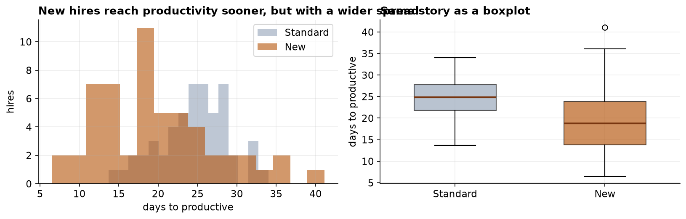

A Redesigned Onboarding Program and Time to Productivity
A two-sample analysis under unequal variances.
Capstone Technical Report · Statistics, Data Science and AI: A Visual Handbook · John Fisher
Keywords: Keywords: two-sample t-test; Welch's correction; homogeneity of variance; Levene's test; effect size; onboarding.
1. Introduction
Comparing a treatment condition to a control on a continuous outcome is the archetypal two-group inference problem. Here the treatment is a redesigned onboarding program and the outcome is time to productivity in business days, lower being better. The hypotheses for the population mean difference are H0: mean(New) = mean(Standard) versus H1: the means differ, two-sided at alpha = 0.05. A frequently overlooked subtlety, and the methodological focus of this report, is that the textbook pooled t-test assumes equal group variances; when that assumption fails, Welch's unequal-variance formulation is required.
2. Data
The dataset comprises 115 hire records with a program label, department, and time to productivity. The program label had been recorded with inconsistent casing and whitespace and was standardized prior to analysis; duplicates, missing outcomes, and out-of-range values were then removed (Table 1). The analysis sample was n = 107 (52 Standard, 55 New).
| Step | Rule | Removed | Remaining |
|---|---|---|---|
| Raw export | — | — | 115 |
| Standardize label | trim/case-fold cohort | 0 | 115 |
| De-duplication | drop duplicate rows | 2 | 113 |
| Missing outcome | drop blank days_to_productive | 3 | 110 |
| Range filter | retain 1–120 business days | 3 | 107 |
3. Methods
Normality within each group was assessed by the Shapiro-Wilk test and Q-Q plots. Homogeneity of variance was tested by Levene's test (median-centered, robust to non-normality) and Bartlett's test. Because both indicated unequal variances, Welch's t-test with Satterthwaite degrees of freedom was adopted as the primary test; the pooled t-test is reported only for contrast. The Mann-Whitney U test provided a rank-based sensitivity analysis. Effect size was Cohen's d using the simple pooled standard deviation, and precision a 95% CI for the mean difference. Computations used SciPy and statsmodels in Python 3; figures used Matplotlib.
4. Results
| Group | n | Mean (days) | SD | Median | Min | Max |
|---|---|---|---|---|---|---|
| Standard | 52 | 24.56 | 4.43 | 24.9 | 13.7 | 34.0 |
| New | 55 | 19.88 | 7.59 | 18.8 | 6.5 | 41.1 |

Both cohorts were consistent with normality (Shapiro-Wilk: Standard W = 0.985, p = 0.745; New W = 0.966, p = 0.115), but the equal-variance assumption was rejected by both tests (Table 3), the New cohort's standard deviation being 1.71 times the Standard cohort's. Welch's test is therefore the appropriate procedure.
| Diagnostic | Statistic | p-value | Conclusion |
|---|---|---|---|
| Shapiro-Wilk (Standard) | W = 0.985 | 0.745 | normal |
| Shapiro-Wilk (New) | W = 0.966 | 0.115 | normal |
| Levene (median-centered) | W = 10.21 | 0.0018 | variances differ |
| Bartlett | chi-sq = 14.28 | 0.0002 | variances differ |
| Test | Statistic | df | p-value | Effect / interval |
|---|---|---|---|---|
| Welch t (primary) | t = 3.920 | 87.8 | 1.75e-04 | d = 0.75; 95% CI [2.31, 7.05] d |
| Pooled t (for contrast) | t = 3.866 | 105 | 1.92e-04 | assumes equal variance; not valid here |
| Mann-Whitney U | U = 2063 | — | 8.06e-05 | distribution-free confirmation |

The New program reduced mean time to productivity by 4.68 days (95% CI [2.31, 7.05]), a medium-to-large standardized effect. With near-equal group sizes the pooled and Welch statistics happen to nearly coincide (t = 3.87 vs 3.92); this coincidence is not general, and under unequal group sizes ignoring heteroscedasticity can bias the p-value in either direction, which is why Welch is the appropriate default.
5. Interval estimates and group comparability
| Quantity | Estimate | 95% CI | Method |
|---|---|---|---|
| Difference in mean days | 4.68 | 2.31 to 7.05 | Welch t interval |
| Cohen's d | 0.75 | 0.36 to 1.22 | percentile bootstrap |
| SD ratio, New / Standard | 1.71 | 1.31 to 2.24 | percentile bootstrap |
| Department composition | — | χ² = 3.46, p = 0.33 | test of independence |
The interval on the primary contrast spans 2.3 to 7.1 days. The lower bound and the upper bound imply materially different returns on the program, and a business case constructed on the point estimate alone conceals which of them the evidence supports.
The dispersion ratio is reported with an interval because the secondary finding depends on it. The interval excludes unity throughout, establishing that the greater variability of the new cohort is a property of the program rather than of this sample.
The final row records a comparability check not present in the original analysis. Cohort assignment was not randomized, so differential department composition would confound the contrast. No detectable imbalance is present. The inferential logic is inverted here, a large p-value being the reassuring result, and the check therefore establishes only the absence of detectable imbalance rather than its absence.
6. Discussion
The redesign delivers a real mean acceleration. The more consequential finding is the marked increase in variance: the New cohort is faster on average yet less predictable, with a right tail of slow starters comparable to the incumbent program. A decision framed only on the mean would misrepresent the operational reality, where variance in ramp time carries staffing and planning cost. Reporting the dispersion alongside the mean difference is therefore not optional.
Threats to validity. The comparison is causal only under comparable assignment; if the New program was allocated by department, manager, or start window rather than at random, the estimated effect confounds the program with those factors, and comparability on covariates should be verified. The outcome also depends on a consistently applied productivity criterion; differential application across cohorts would contribute measurement, not learning-speed, differences. Finally, this is a single-organization pilot, supporting staged rollout with monitoring rather than broad generalization.
7. Conclusion
New-hire onboarding time was significantly shorter under the redesigned program (Welch t(87.8) = 3.92, p < 0.001; mean difference 4.7 days, 95% CI [2.31, 7.05]; d = 0.75), a result robust to a distribution-free check. The accompanying increase in variance qualifies the recommendation and should be managed in deployment.
References
- Student (1908). The probable error of a mean. Biometrika, 6(1), 1–25.
- Welch, B. L. (1947). The generalization of Student's problem when several different population variances are involved. Biometrika, 34(1–2), 28–35.
- Levene, H. (1960). Robust tests for equality of variances. In Contributions to Probability and Statistics (pp. 278–292). Stanford University Press.
- Bartlett, M. S. (1937). Properties of sufficiency and statistical tests. Proc. R. Soc. Lond. A, 160(901), 268–282.
- Mann, H. B., & Whitney, D. R. (1947). On a test of whether one of two random variables is stochastically larger than the other. Ann. Math. Statist., 18(1), 50–60.
- Shapiro, S. S., & Wilk, M. B. (1965). An analysis of variance test for normality. Biometrika, 52(3–4), 591–611.
- Cohen, J. (1988). Statistical Power Analysis for the Behavioral Sciences (2nd ed.). Lawrence Erlbaum.
Reproducibility
The dataset (capstone-onboarding-productivity.xlsx) and an executable notebook reproducing every statistic, table, and figure accompany the chapter. Analyses use NumPy, pandas, SciPy, statsmodels, and Matplotlib.